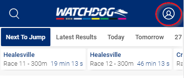

What is Watchdog Blackbook?
The new Watchdog Blackbook will replace the FastTrack eDog tracker product and allows you to:
- Search for your favourite Dogs AND Trainers.
- Import dogs currently tracked in your eDog tracker.
- Bookmark your favourites in your new personal Blackbook.
- Add your own form comments to your Blackbook.
- Quickly access all upcoming and recent favourites.
- Receive daily email reminders when your favourites are scheduled to run.
-
Push Notifications on your mobile device and Smart Watch so you never miss
your favourite Runners again!
Create an account
You can create a Watchdog account using either an email address and password, or you can login using Facebook, Twitter or a Google account.
To create an account, tap or click on the profile button in the top right hand corner of the Watchdog App or desktop site.

Tip: Make sure you verify your account or you will not be able to receive daily email summaries of when our favourite dogs and trainers are scheduled to run.
Need help creating your account or logging in? Check out our Watchdog Account Creation Guide [PDF].
Import Your Favourites
You can import from your account profile page in Watchdog, which will ask for you to enter your FastTrack login information - either your FastTrack Member Number or the email you used to create your account with FastTrack and your FastTrack password.

Still need help? Check out our Watchdog Import Guide [PDF].